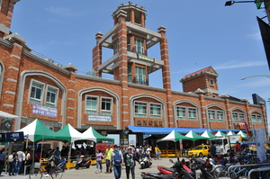
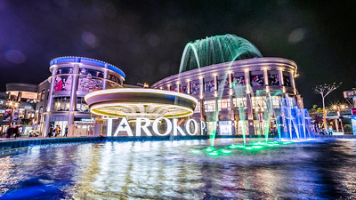
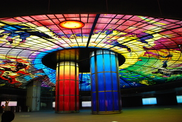
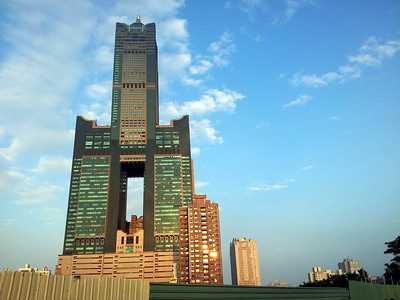

Cijin

This is a district of Kaohsiung. It is a harbor and merchants gather together to sell seafood. In addition, you can also take a ferry to the other side of the bay which is Xiziwan. Apart from food, you can also take a walk along the beach. There is also a Rainbow Church nearby.
Taroko Park

This is a combination of a shopping mall and amusement park. Not only does it have a shopping mall, it also has a hotel, racing track, and fitness enter. They even have a small track for kids so that they can also enjiy the experience.
Kaohsiung MRT Formosa Boulevard Station

The Kaohsiung MRT Formosa Boulevard Station is regarded as the 2nd most beautiful staion in the world. It was designed by an Italian artist called Narcissus Quagliata. It's also known for it's "Dome of Light", the largest glass in the world. It has a diameter of 30 meters and an area of 2180 square meters with a total of 4500 glass panels.
85 Sky Tower

85 Sky Tower or Tunex Sky Tower was once the tallest skyscraper in Taiwan. The building was also designed by C.Y. Lee (the person who designed Taipei 101) and Obata and Kassabaum. The building include shoppong malls, hotels, and work areas. What's special about this tower is that the bottom structure merges into one on the 39th floor. If you visit Kaohsiung, this place would be a nice place to stop by.